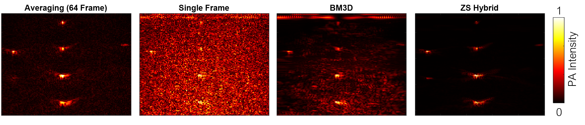

Research Projects
My research interest lies in Control, Optimization, and Artificial Intelligence with applications in Robotics and Autonomy to make our world smart and connected.
2023
Ajna
Ajna: Generalized deep uncertainty for minimal perception on parsimonious robots
Science Robotics 2023
Nitin J. Sanket*, Chahat Deep Singh*, Cornelia Fermuller, Yiannis Aloimonos, Sci. Robot. 8, eadd5139, 2023.
* Equal Contribution
Cover of Science Robotics Journal, August 2023.
Paper UMD WPI

Olive The Above
Detecting Olives with Synthetic or Real Data? Olive the Above
IROS 2023
Yianni Karabatis, Xiaomin Lin, Nitin J. Sanket, Michail G. Lagoudakis, Yiannis Aloimonos, IEEE International Conference on Intelligent Robots and Systems (IROS), 2023.
UMD WPI
